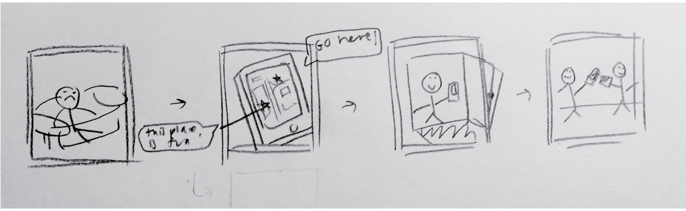

Concept 1
My first concept is an application where users can play music and customize the visual aspect of the music player: they can choose colors/color themes, different background graphics, as well as the type of audio visualizer (waves, circles, bars, etc.) to their choosing. In terms of setting, the people involved or the primary users would be those that enjoy listening to music as a way of distressing or distracting themselves from anxiety/feelings of depression. The application can also be used by anyone who enjoys listening to music. The environment would be anywhere, from a laptop/computer to an iPad or iPhone (though I believe we are creating our initial prototypes as web interfaces, I would like to imagine that someday this would become a mobile app as well). As mentioned above, the task being accomplished would be to help users overcome feelings of emotional/mental distress but also for people to relax and enjoy a variety of interactive visuals. The application also gives people another way of visualizing music - the interactivity lets users incorporate their own creativity into the way they experience music. It enables people to fulfill their own creative desires in a fun and simple way. The steps in using the application are simple: users can navigate through a menu showing the four different ways they can customize their music player: color, the song file, the type of audio visualizer, and the graphics. They can toggle down and see their choices - after they select one, a submit or play button will be able to start the music player.
Concept 2
My second concept also has to do with addressing audiences that suffer from anxiety, stress, or depression. It is a ‘Yelp’ that, rather than food, helps people search for fun activities in their vicinity. The application will allow people to comment and review certain places, and thus interact with one another as well. It enables and encourages people to go outside and engage with one another in a healthy and active way. Social media usage today and its addictive nature has been proven to propel people further into negative emotions - for the people that fine themselves turning to unhealthy habits of social media usage when they are emotionally distressed, this application will be a positive way for them to explore their neighborhood and grow closer to their community. Like yelp, a search bar will allow user to search for a specific place. A map will have different places/activities pinpointed with icons that let users identify what kind of place it might be, as well as the location’s popularity level. In addition to people experiencing any kind of mental distress, it can also be used by people who are simply bored and searching for new things to do. In terms of the environment, the application is intended for both mobile phones and laptops/computers. The application will fill the need for a healthy and positive way for people to use technology to distract themselves from depression, anxiety, or stress. It reverses the negative stigmas surrounding technology and invites users to regain a connection to themselves and their surroundings.